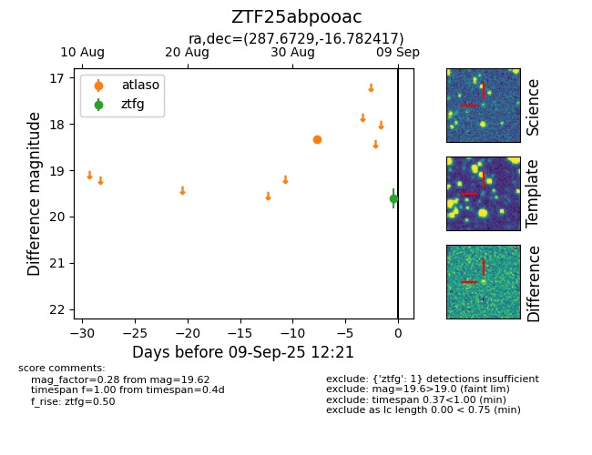

FINK: ZTF25abpooac
Lasair: ZTF25abpooac
ALeRCE: ZTF25abpooac
ZTF25abpooac (ztf,fink)
equatorial (ra, dec) = (287.6729,-16.78242)
galactic (l, b) = (19.9271,-11.72175)

last atlaso=18.34, ztfg=19.62
1 atlaso, 2 ztfg detections